Префектура Окаяма · Цуяма · архитектура и поезда
Цуяма: банк-галерея, поезд-чемодан и депо с паровозами
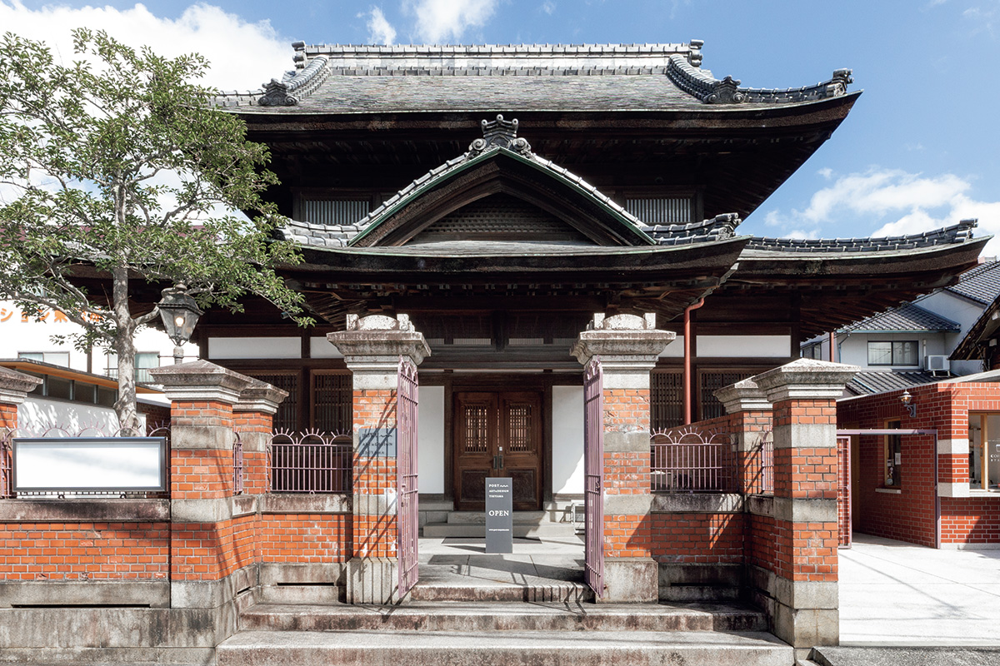
На севере Окаямы стоит Цуяма, город бывшего замка и старых банков. Здесь здание начала прошлого века превратили в арт-площадку, отсюда уходит поезд-чемодан, а в веерном депо до сих пор разворачивают паровозы.
Архитектура
Банк, который стал галереей
Цуяма, центр исторической области Мимасака на севере префектуры Окаяма, до сих пор хранит планировку призамкового города. В одном из её кварталов стоит PORT ART&DESIGN TSUYAMA: в 1920 году здесь открылся филиал банка «Сэно», и здание с тех пор поддерживало не только финансы города, но и его переход в новое время. Сегодня это площадка искусства и дизайна.
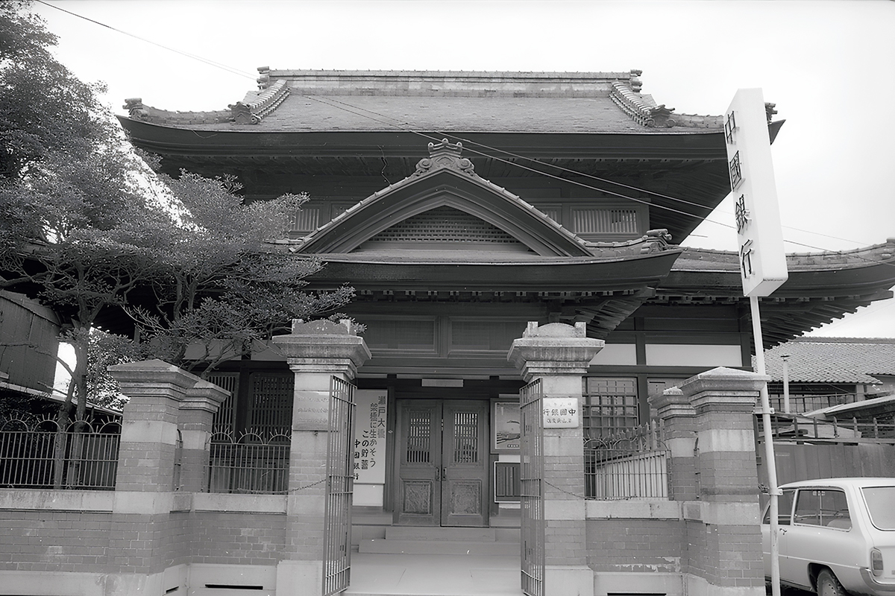
Проект выполнил мастер-плотник Тоётаро Икэда, которому были одинаково близки приёмы японского и западного зодчества. Его опыт читается в самой постройке: и в общей композиции, и в деталях.
С улицы композиция понятна сразу: впереди кирпичные ворота и стена, за ними деревянный корпус, напоминающий буддийский храм. Обе части выстроены симметрично по одной оси. Крышу покрыли не черепицей, а природным сланцем, как на западных домах. Под карнизом идут парные «струящиеся» стропила, задающие контуру дома мелкий ритм.
Внутри корпуса сделан двухъярусный атриум. На месте банковской стойки лежит цельная доска кейяки длиной около восьми метров, потолок собран из криптомерии из Ёсино, верхние части стен из яку-суги и бисю-хиноки. Кессонный потолок и резные решётки над перегородками продолжают формы сёин-дзукури, но украшений мало: пространство держится на качестве материала.
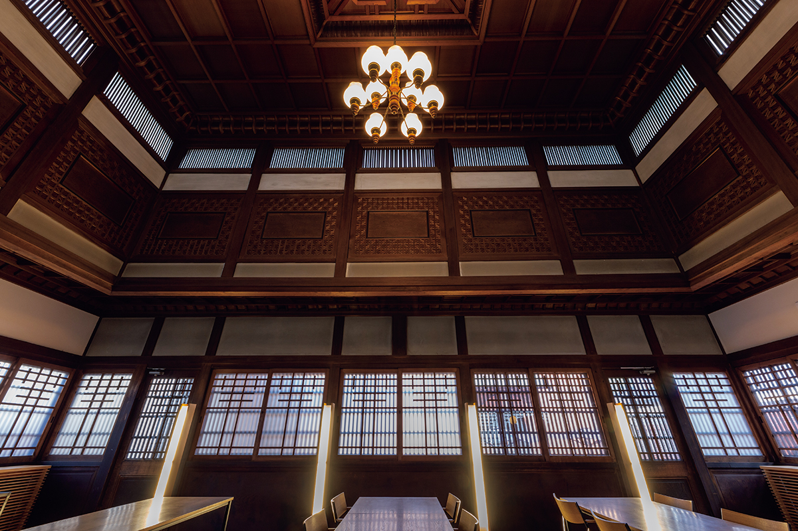
За главным корпусом сохранились двор, вымощенный кирпичом, кладовая для денег с каменными стенами и кирпичное здание склада. Кирпич уложен до самого верха, входы и окна оформлены арками.
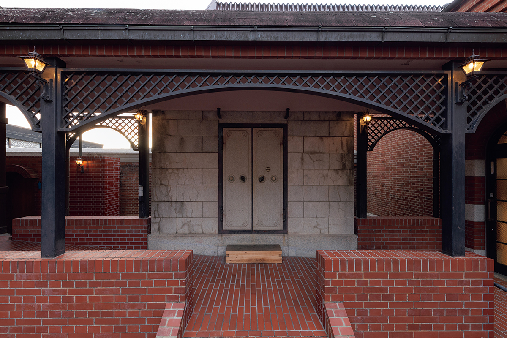
Кирпич в Японии почти перестали использовать после землетрясения 1923 года. Эти постройки стоят прямо перед той чертой и хранят и замысел, и конструкцию эпохи Тайсё. Сила дома в том, что он не сталкивает банковскую парадность и храмовую тяжесть, а находит у них общее достоинство и сводит его в формах своего времени.
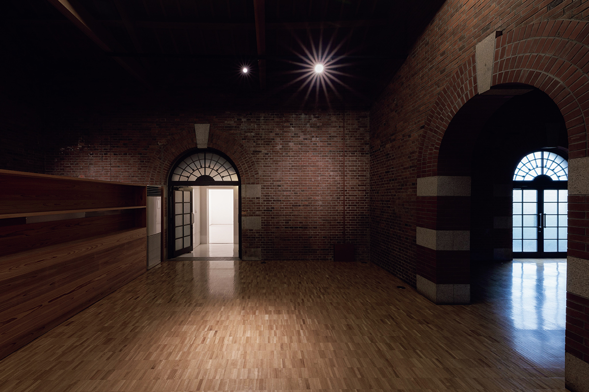
Когда банк закрылся, город выкупил здание ради сохранности и в 1975 году открыл здесь музей западных наук Цуямы. В 2009 году рядом построили новое здание музея, а в этом теперь проходят выставки, мастер-классы и встречи. В 2024 году дом признали важным культурным памятником префектуры.
PORT ART&DESIGN TSUYAMA
- Адрес
- префектура Окаяма, Цуяма, Кавасаки, 823
- Телефон
- +81 868-20-1682
- Часы работы
- 10:00–18:00 (вход до 17:30)
- Выходные
- вторник (или следующий невыходной день, если вторник попадает на праздник), день после праздников, с 29 декабря по 3 января
- Цены
- вход бесплатный (на отдельные выставки бывает билет)
- Сайт
- port-tsuyama.net
Поезд
Белый поезд-чемодан
Из Окаямы в сторону Внутреннего моря ходит белый поезд La Malle de Bois. Его окна обыграны как чемоданы, а по кузову разбросаны рисунки и слова о путешествиях. Внутри тепло от дерева, продуманный интерьер и работы современных художников.
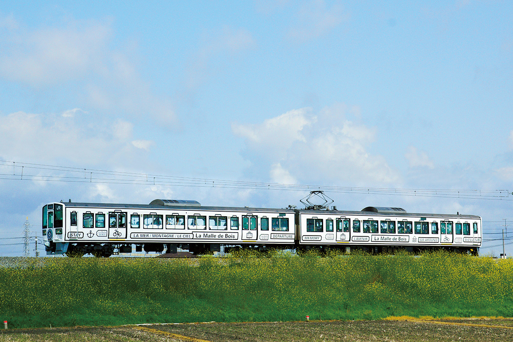
В каждом вагоне, кроме откидных кресел, есть места-стойки лицом к окну: с бокалом местного сакэ или с местными сладостями море и острова смотрятся иначе.
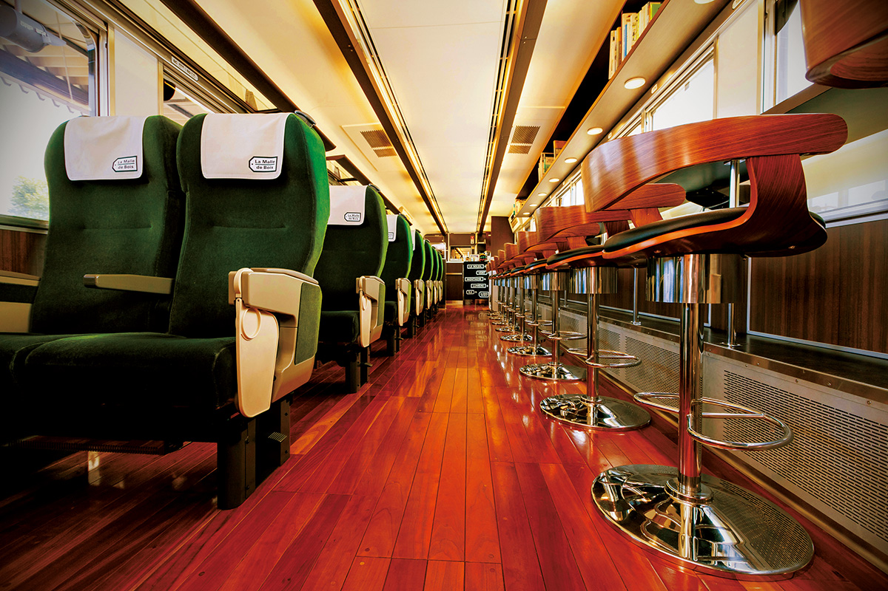
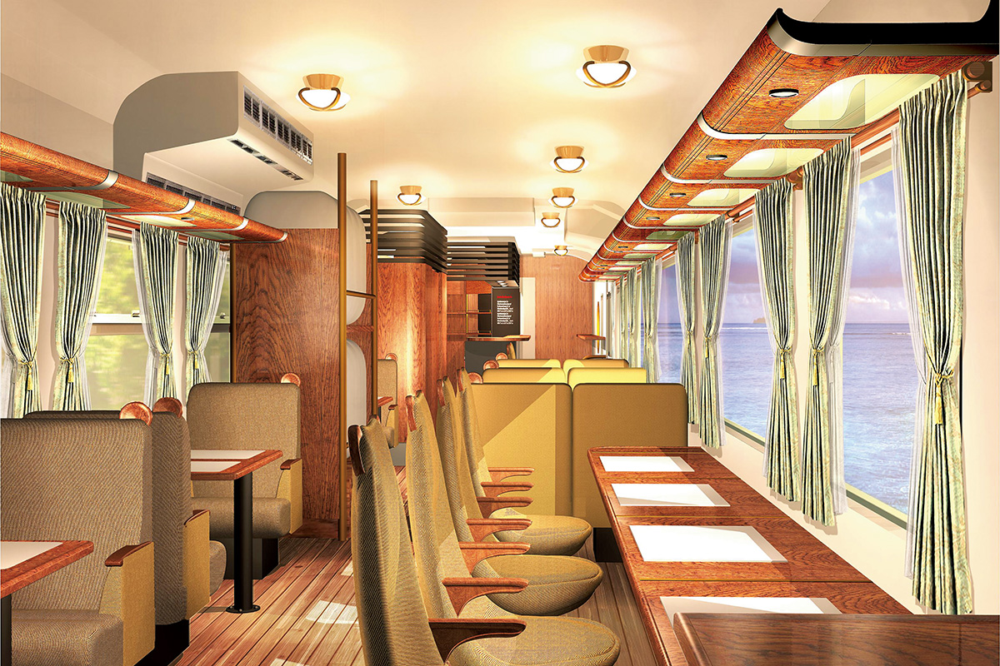
Интерьер дополняют работы современных художников: где-то показывают книги-картинки в форме чемодана.
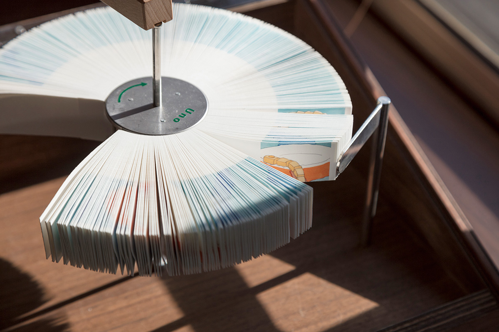
К поездке можно заказать набор из пяти мини-тарталеток на местных фруктах: 1 500 иен с налогом, по предварительному заказу.
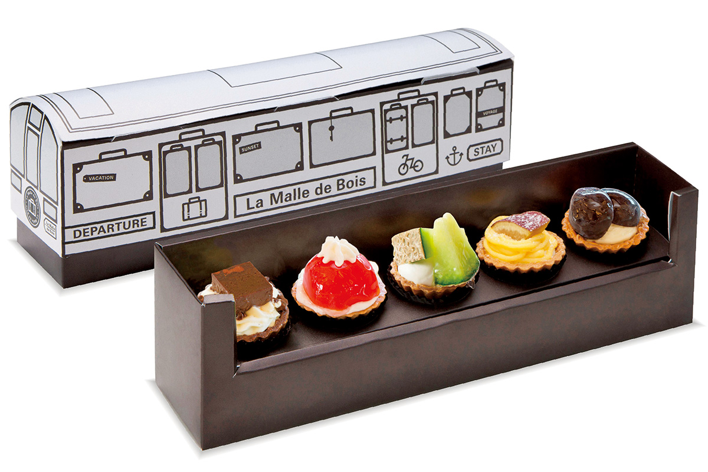
Есть и место для велосипеда: поставить его целиком, не разбирая, можно по бесплатной брони на четыре места.
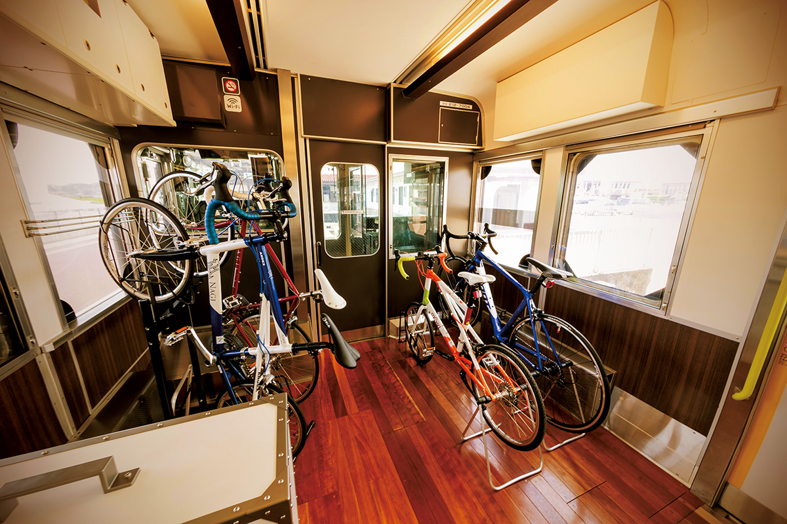
La Malle de Bois
- Год запуска
- 2016
- Маршруты
- четыре направления, Уно, Михара, Хинасэ и Котохира
- Места
- 51, все вагоны зелёные, места по брони
- Велосипеды
- четыре места, по брони
- Сайт
- jr-odekake.net
Музей
Веерное депо и паровозы
В 1936 году на западе станции Цуяма построили веерное депо для паровозов. В 2016 году его открыли как железнодорожный музей «Цуяма манаби-но тэцудокан».
Депо с поворотным кругом второе по величине в Японии. Под его кровом стоят 13 машин, от паровозов до дизельных локомотивов: паровоз серии D51, известный под прозвищем «дэгоити», и дизельный локомотив DE50.
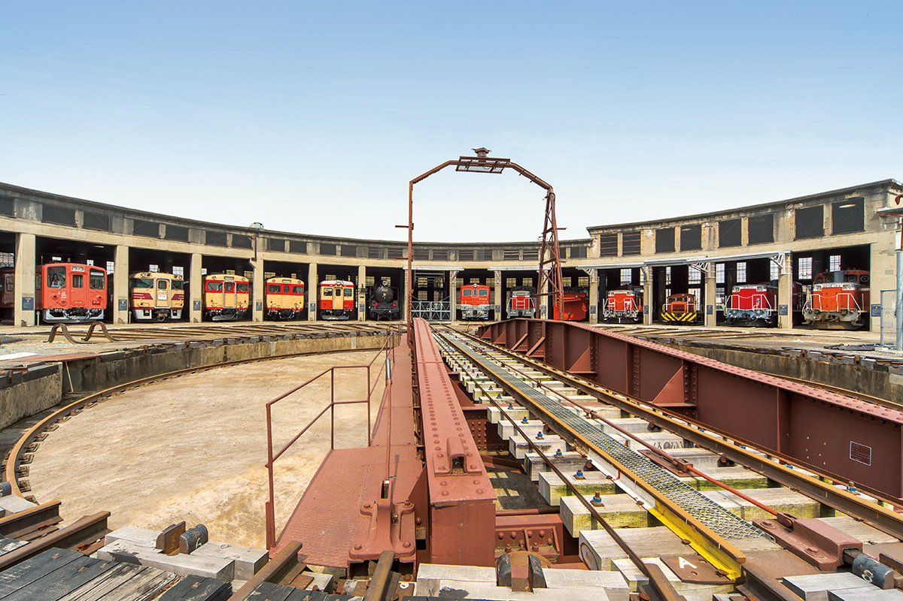
Дважды в день над залами разносится гудок «дэгоити»: в дни работы музея его дают в 12:00 и 15:00.
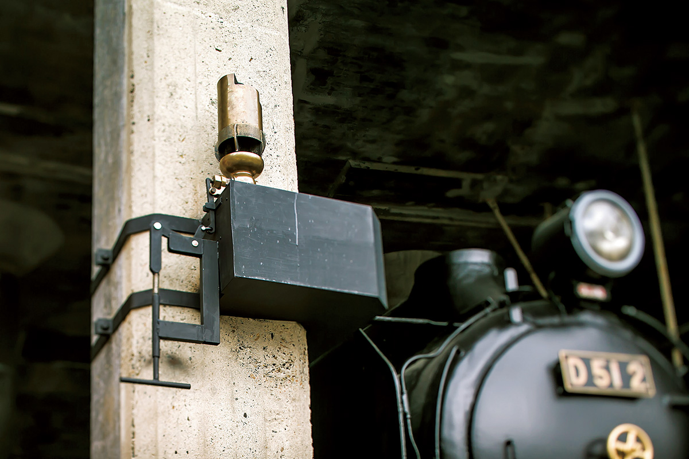
Поворотный круг действующий. Раз в месяц здесь показывают, как разворачивают настоящий локомотив.
Ещё в музее есть зал истории и зал устройства. В последнем можно потрогать жезловую блокировку, которой раньше разводили поезда на одноколейке, и вынуть жезл. А в зале города стоит макет улиц Цуямы.
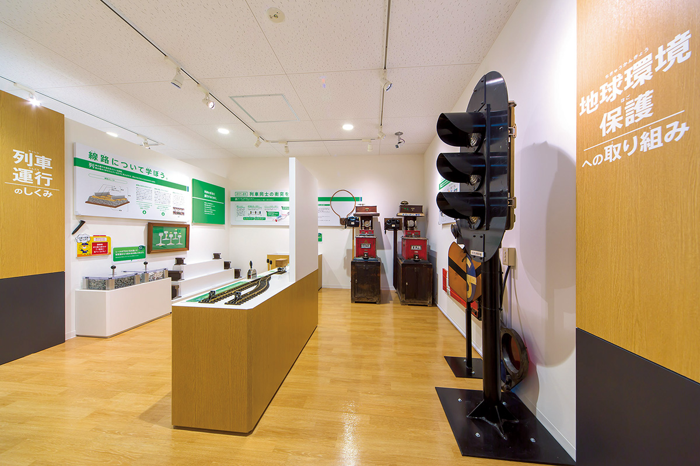
Цуяма манаби-но тэцудокан
- Адрес
- префектура Окаяма, Цуяма, Отани
- Телефон
- +81 868-35-3343
- Часы работы
- 9:00–16:00 (вход до 15:30)
- Выходные
- понедельник (если это праздник, то следующий день), с 29 по 31 декабря
- Цены
- взрослый 310 иен, школьники 100 иен, дошкольники бесплатно (цена 2026 года, актуальные смотрите на сайте)
Фото: Синтаро Мияваки, город Цуяма.